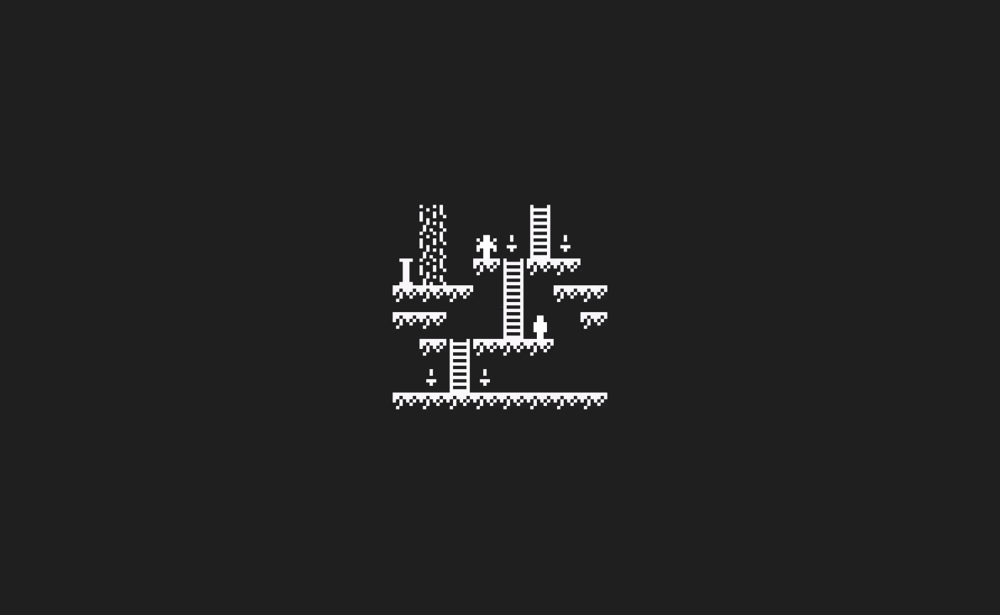
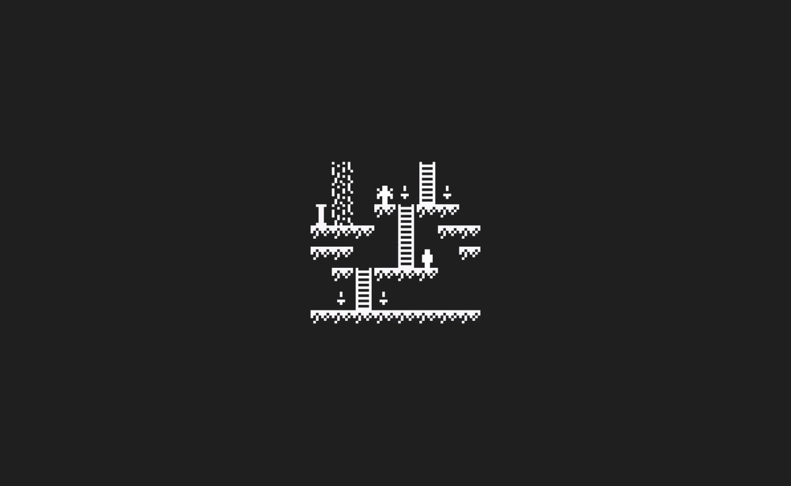

Q0917–L0518 · 9.29 h · 9.29 VI
Grymstorge was an unreleased Bitsy exploration game where you explore an abandoned subterranean fortress and discover its secrets.
Grymstorge was an unreleased Bitsy exploration game where you explore an abandoned subterranean fortress and discover its secrets.
